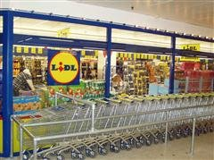

Když se řekne spam, tak si člověk vybaví svou e-mailovou schránku zaplácanou nabídkami na Viagru, Rolexky a penis enlargement, nebo toto video. Spam nás rozčiluje, ale naučili jsme se mu bránit. V digitálním světě lze spoustu věcí přecejen o dost lépe uchopit a filtrování spamu je dnes tak efektivní, že o žádném skoro nevím. Co ale veškerý ostatní spam?
Když se řekne spam, tak si člověk vybaví svou e-mailovou schránku zaplácanou nabídkami na Viagru, Rolexky a penis enlargement, nebo toto video. Spam nás rozčiluje, ale naučili jsme se mu bránit. V digitálním světě lze spoustu věcí přecejen o dost lépe uchopit a filtrování spamu je dnes tak efektivní, že o žádném skoro nevím. Co ale veškerý ostatní spam?
V reálném světě je spousta spamu, kterého jsme si nějak nevšimli, ale jenž kolem nás pomalu vyrašil a dnes ho vnímáme jako přirozený. Vnímáme ho tak, jako by tu byl odedávna. Dalo by se vlastně uvažovat nad tím, co všechno spam je. Wikipedia zná spoustu druhů spamu, no v podstatě je to nevyžádaná reklama. Definice se však omezují jen na elektronický svět. Podle mě můžeme velmi snadno převést tuto definici do našeho denního života.
Otravné telefonní hovory
Mám volně dostupné telefonní číslo, aby na něj mohl kdykoliv zavolat nějaký klient. Často se mi stane, že také zavolá a začne větu slovy „Dobrý den, máte chvilku čas? Měl bych pro vás nabídku…“ Bohužel, totožnými slovy také začínají lidé z telemarketingu. Zpočátku jsem je vždy vyslechl, ale jejich počet a vtíravost (volají mi ráno když spím, volají mi když mám promoce, …) narostl tak, že jim okamžitě vypínám telefon a přiřazuji je do kontaktu debil, nebrat. Nepomáhá to, tatáž čísla mi nadále volají. Obrana typu „antispam“ neexistuje.
Stará dobrá pošta
Trvalé bydliště mám trochu jinde než kde trávím většinu času, ale dokážu si tipnout, kolik mi asi denně chodí obchodních nabídek na něčí služby a produkty, od automobilů přes sadu 12 CD s dechovkami až po software. Když pominu, kolik už padlo lesů na letáky z Lidlu, které po tisícovkách mizí v koších, opět mě hlava vede k zamyšlení nad tím, že obrana co? Neexistuje. Mohu dát na schránku nějakou prosbu, ale je to asi jako si udělat e-mail no-spam-plz@javorek.net.
Bránit se? A pokud ano, tak jak?
Chápu, že některé letáky nebo hovory mohou být pro příjemce užitečné. Zavolali mi např. jednou z T-Mobile, jestli nechci prodloužit smlouvu, když za dva měsíce končila. To jsem popravdě chtěl, ale byl jsem líný někam chodit. Vyřešil jsem to tenkrát hned díky takovému telefonátu s milou slečnou během čekání u pokladny v Albertu. A když jsme u Alberta, rozumím tomu, že hodně lidí se do letáků dívá, kde je levná šunka a pak ji tam jde koupit. (Já třeba ne, chodím většinou do jediného obchodu a buď tam prostě zrovna sleva je, nebo není. Konfrontuji se s nápisem AKCE jen a pouze přímo u regálu.) Přiznejme si ale, že 99 % takových nabídek opravdu jen plýtvá naším časem.
Jak takovou situaci řešit? Jak s poměrně silnou efektivitou obejít e-mailový spam, spam v diskusích nebo ten na blozích už víme. Jak ale na poštovní spam nebo telefonní spam? Dostaneme se do doby, kdy bude podnikatel 3 hodiny denně jen pokládat telemarketingové hovory s „ne, díky“, protože někde zveřejnil své číslo?
Smysl reklamy
Malá úvaha nakonec. Já osobně nenávidím reklamu a cokoliv s ní spojeného, ačkoliv jsem v oboru, jenž k ní nemá zrovna dvakrát daleko a živnostenský list mám na reklamní činnost a marketing. Pokud definujeme spam jako nevyžádanou reklamu, existuje nějaká vyžádaná? Já osobně nemám rád billboardy (a vlastně prakticky jakékoliv venkovní reklamy), nemám rád televizní reklamy, reklamy v kině, reklamy v rádiu, blokuji reklamy na internetu, nemám rád výsledky vyhledávání s e-shopy na vyšších místech než jsou definice z Wikipedie, nemám rád reklamy ve schránce, telefonu a prostě ani nikde jinde. Hranice toho, co je nenásilná upoutávka a co je všudypřítomná vtíravá reklama, je tenká a subjektivní. Reklama je všude a pomalu přes ni nevidíme sami sebe. Je na domech, v knihách, na autech i na samotných lidech, najít „prázdné“ místo v našem světě je skoro nemožné. Je jednoduše všude a tam kde není, tam bude. I ten hodný/zlý strýček Google je tady jen díky reklamě.
A přitom na jakém principu reklama vlastně funguje? Je to jednoduché. Dříve to fungovalo tak, že když švec dělal dobré boty, rozneslo se to po dědině vzájemným doporučením a když je dělal vyloženě bravurně, doneslo se to až kdovíkam daleko a za chvíli dělal boty pro císařpána. Pokud dělal špatné boty, rozneslo se to taky a hlavně brzy skončil, protože si pro ně k němu nikdo nešel. Bylo to přirozené, probíhala velmi aktivní reflexe, kdy švec věděl, jestli jeho práce je dobrá nebo špatná, a lidé věděli, kam jít pro boty. Dnes takový systém funguje jen velmi omezeně a je obrovsky narušen právě reklamou. Ta nám, jak si mnozí vůbec neuvědomují, nesděluje tento švec je dobrý, ale tento švec má dost peněz na to, aby tady dostal prostor a mohl se sám veřejně vychválit.
 Kindle
Kindle